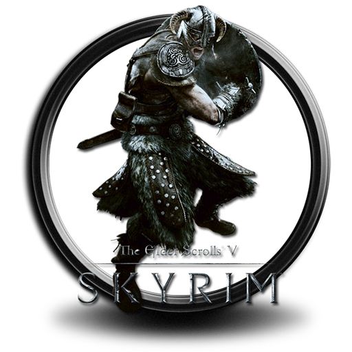

explore


Tamriel, also known as Taazokaan in the Dragon Language, is one of the continents on Nirn - the Mortal Plane, the planet upon which Tamriel and the mortal races reside. Tamriel is a great melting pot of cultures and races. It is home to at least a dozen races, with dozens more having died out or changed.
There are nine distinct provinces, each home to one of the more populous races of Tamriel. A proposed tenth province, Orsinium, has never been taken very seriously except by those who want it, namely the Orcs, who wish to have a home province of their own.
Skyrim has nine holds, or regions, each governed by a jarl - Eastmarch, Falkreath Hold, Haafingar, Hjaalmarch, The Pale, The Reach, The Rift, Whiterun Hold, Winterhold. Many of the holds have distinct climates, such as the Rift being an aspen forest, Falkreath Hold being a pine forest, and Eastmarch being tundra. Snowy mountain environments are also found in part of most holds.
Solitude is the capital city of both Haafingar Hold, and all of Skyrim. Currently ruled by Jarl Elisif the Fair, widow of the late High King Torygg, it is the headquarters of the Imperial Legion stationed in Skyrim. General Tullius commands the Imperial army from the stone-walled Castle Dour, while Solitude's Jarl, Elisif, resides in the Blue Palace. The Thalmor have an embassy hidden in the nearby mountains.
Solitude is both a reinforced and breathtaking stronghold. Set upon a great peninsula, known as the Great Arch, that towers above the mouth of the Karth River, the city is surrounded by the soaring peaks of the nearby Kilkreath Mountain. Because of the uneven terrain outside of the city walls, there is very little room for private land for farms. There was a lumber mill built on the Karth River and even small farms on the highlands, between the main road and the docks. Solitude is neighbored by several settlements, including Dragon Bridge to the south and High Rock to the far west.
The road towards Solitude's entrance is heavily-defended by the gates, the Squall Gate and the Storm Gate, as well as several towers. The main road runs underneath the arch and goes around the region's east coast until it reaches the hinterlands and the provincial border.
Solitude is also a major shipping port and important Imperial supply line. Most of the shipping in Solitude is run by the Imperial-financed East Empire Company. The docks are located underneath the Great Arch. There is a vast cavern underneath the mountain that is currently used by the East Empire Company as one of their largest warehouses.
Solitude's founding dates back centuries ago before it extended onto the great arch. It was an encampment on the Karth River situated at the base of the landmark, where it was used as a windbreaker. It was an ideal base for the ancient Nords, who built fur and wooden shelters on the river's shores. The founders of Solitude were said to be deeply devoted to the Divines, and this sentiment continues to live in modern-times as the local temple became the biggest place of worship in Skyrim. The town started as a simple castle keep, which is now known as Castle Dour, but it later gained more of its footing as a well-defended settlement during the coronation of High King Erling, who ordered the construction of Solitude's outer walls around the keep. He later ordered the construction of a towering bridge that separates the Well District from the east-side. The city's unique style of architecture was chosen by the High King himself, but the true mastermind that created it is unknown, though the person, Thryrahilde is said to have championed the motif before the walls were built. Sometime before the province of Skyrim was formally founded by High King Harald in 1E 143, the Emperor's Tower, the original home of Haafingar's kings and the centerpiece of the keep was replaced by the Blue Palace.
The earliest known texts that describe Solitude as a well-established kingdom date to the early First Era, when the province held ties with the First Empire, concurrent to the formation of the Bards College. The Kingdom of Solitude was one of the greatest oppositions against Olaf One-Eye, who rose to supremacy in the wake of the War of Succession. Olaf's wrath over the city was swiftly-executed and animosity between the king and the city created one of Solitude's longest-living traditions, the Burning of King Olaf. It is held annually in the courtyard at the Bards College. Solitude has since become one of the most significant trading ports, collaborating with other cities of worth such as Senchal, Wayrest, and West Anvil. Following the First Akaviri Invasion in 1E 2704, Emperor Reman I shifted focus to the Reach, splitting into its east and western-half. He utilized several forays from both Solitude and Evermore to quell the spirits of the local Reachmen, but these attempts were unsuccessful since taming the landscape was much harder for these soldiers.
In the late-First Era, the Kingdom of Solitude was ruled by the tyrannical High Queen, "Head Rolling" Roleke, who killed twenty rebels within less than five minutes. Her reign brought contempt amongst her people, who took arms and began their siege over the Blue Palace. From another region, the young jarl of a forgotten hold, Irthvyd joined the uprising and approached the city gates. However, he was stopped by a visage of Kyne, who told him that the High Queen was killed by her progeny, who in turn died in battle. Solitude was in need of order and the Goddess of Storms chose Irthvyd to take assume the mantle of High King. He was thus named the new High King of Solitude and established peace throughout Haafingar Hold, however, he died without an heir, and so his senior advisor, Temylda ascended the throne after a fight with several other jarls.
Forty years later, Temylda's reign ended and a new leader was chosen, out of bloodshot and violence. The warrior, Alldimar, known for his many skirmishes with the Reachmen, won the title of High Kingship from the child successor, using his years of knowledge in arcane magic and his great sense of warfare. Peace swept through the kingdom but random people throughout his tenure died of bizarre accidents, and his cold-eyed advisor, Freiretta was the subject of countless rumors and conspiracies. By the time Alldimar had passed, the secrets were revealed. The skulls of those "accident" victims were stored in a hidden compartment of the High King's quarters. Whatever purpose it may have been is unknown, but he has since been remembered as the "Ghostmaker". Servants at the Blue Palace say they hear voices and see shapes out of the corner of their eye to this day.
In 2E 431, the assassination of High King Logrolf brought about a time of change in the province of Skyrim. Naturally, the throne would have been passed to the High King's next of kin, ideally, Jarl Freydis of Windhelm. However, tension had arisen between the east and west when Jarl Svartr of Solitude had challenged her claim to leadership and thus called for a moot. The moot had chosen Svartr as their High King, and what followed was a decisive schism that created the West and East Kingdoms of Skyrim, with the west under the rule of High King Svartr of Solitude. His domain became the capital of the western kingdom, which remained active for several years. One of his descendants, Svargrim the Wolf had defended the hold throughout his reign, such as when he beheaded the Sea Giant captain, Kruntharth and later his escapades in the Great Troll Rut of 2E 565, a time of unspeakable horror. Since that day, Trolls had avoided Solitude for years.
After a failed assassination attempt on the Eastern High King, Jorunn, the Icereach Coven had traveled to the heart of Western Skyrim and began to sow the seeds for their next endeavor. Agents of the Skald-King, namely Lyris Titanborn traveled to the capital, Solitude and began their investigation. Their sources uncovered strange houseware imported from Sentinel and pamphlets for a mining operation in the Druadach Mountains handed out by Reachmen.
After one of these agents was killed in action, Lyris enlisted the help of a traveler and met with the High Queen of Western Skyrim, Gerhyld. Unlike the High King, who has a deep hatred for the Skald-King and thus suspects the agents, she was more willing to hear them out. She offered them more time to proved irrefutable proof. They scoured the city for more information and later traveled to Mount Kilkreath, where they witnessed a massacre at the Kilkreath Temple and disrupted the first of several harrowstorms. With all of the evidence in hand, the two return to Solitude, only to find the High Queen had been assassinated.
Despite the incident, High King Svargrim chose not to make the proper initiative to deal with the threat, so his daughter, Princess Svana and the eastern agents took it upon themselves to warn the neighboring holds, Hjaalmarch and Karthald about the impending danger. While they managed to recruit Jarl Reddharn of Morthal, they found the mountain town of Karthwatch devastated at the hands of another harrowstorm created by the coven. Refugees were escorted back to Solitude, where they remained safe within the confines of the city. Through Jarl Reddharn and Magister Fridelja of Karthwatch's testimonies, Svargrim begrudgingly moved forward by rounding up the harrowed to lock them away in the Tower of the Wolf in Castle Dour. He later sent soldiers to guard Solitude's outer defense and began to stockpile Castle Dour for the impending siege. One of their allies, the vampire, Fennorian of House Ravenwatch began to develop an elixir that would bypass the harrowstorm and disrupt its effects. It was after everyone in his hold turned against him, Svargrim revealed his allegiance with the Gray Host and their lord, Rada al-Saran.
After his reveal, the Gray Host took control over Castle Dour, which was sealed from the rest of the city. Svargrim disappeared from the palace and delved into the underground realm of Blackreach. Svana and her companions followed suit and fought their way through Greymoor Keep, an enormous vampire castle found directly underneath Solitude. In the keep, the High King underwent a gruesome ritual that turned him into a vampire lord and provided him control over the harrowstorm that would soon engulfed Solitude. From the Temple of the Divines, the harrowed poured out of Castle Dour and attempted to break through to the city proper. Fennorian and Lyris Titanborn fought waves upon waves of enemies at the base floor of the keep while Svana and the traveler ascended the Tower of the Wolf to confront High King Svargrim. After a great battle, the High King was slain and the Gray Host had been defeated.
Mere moments after, the High King of Eastern Skyrim, Jorunn, and his son, Prince Irnskar had marched into Solitude, offering their assistance to the cause, despite their history with the west. Everyone gathered for a traditional wake, dedicated to the people that lost their lives throughout the event. Even with the city saved from crisis, the war with the Gray Host continued. Fennorian developed his elixir, and the Jarls of Skyrim devised a plan to spread the cure across their holds.
In the early Third Era, the elderly King Mantiarco reigned over Solitude in the years of the Third Empire, under the rule of Emperor Uriel Septim II. However, the relations between the Nordic kingdom and the Empire had slowly waned, prompting the union between King Mantiarco and the then fourteen-year-old, Potema Septim. At first, she was only a pawn of a political marriage, but the King's love for her had led to her rise in power to totality. After several miscarriages, in 3E 97, Potema gave birth to Uriel Mantiarco and he was quickly named the heir of Solitude. In 3E 99, the Emperor and later in the spring, King Mantiarco had passed away, leaving the kingdom in a joint-rule between King Uriel and Queen Potema. In this time, the Queen had established relationships across the northern tier of the empire, sowing the seeds of contempt against the Empire.
Her relationship with the Empire came to a climax in the coronation of Empress Kintyra II when she degraded the newly-named ruler and her mother, Magna by questioning their legitimacy to the Ruby Throne. King Uriel III and Queen Potema were banished from the inner court, returning to Solitude to form a large-scale rebellion against the Third Empire. These events gave way to the War of the Red Diamond, which escalated to the death of the Empress in 3E 114 and the ascension of Emperor Uriel Septim III. But the conflict slowly ended in the favor of Kings Cephorus I and Magnus when the former defeated the Emperor and brought him to his death in Gilane.
By 3E 137, the kingdom became a land of death and the elderly Queen Potema was kept in the Blue Palace, as Emperor Cephorus I relentlessly sacked the city of Solitude. With no real army at her disposal, Potema used daedra, her necromancers and the undead to face against her brother. She died sometime during the siege but her legacy continued through underground factions like the Hörme. But some theologians hypothesized that Potema became a spiritual-daedra that continually haunts the Blue Palace and turns its monarchs insane. This is one of the theories that is attributed to Pelagius III's insanity.
Following Potema's defeat, Pelagius III was named the King of Solitude, placed there by Emperor Cephorus. In his time spent in Solitude, Pelagius began to exhibit signs of insanity which earned the moniker, "Pelagius the Mad." There were many stories of his peculiar eccentricities, such as his constant shift in weight but expressive personality. These were far and few between, but only became worse when his father, Magnus I became the Emperor of Tamriel in 3E 140 and more attention went towards the Kingdom of Solitude, knowing that Pelagius III was the heir-apparent. Legends had spread throughout the Empire as Pelagius III's exploits became more well-known, such as countless declarations of war to the Kingdom of Silvenar or the many cases of stripping during public speeches. By the decree of his father, Pelagius III married Duchess Katariah of Vvardenfell, whose family, the Ra'athim Clan was acquainted with Potema during the war. Despite the political motives, it was also a personal choice by the Emperor, who recognized Katariah as a shrewd diplomat. When the Emperor passed away in 3E 145, Pelagius III and Katariah moved to the Imperial City and his sister, Jolethe became the Queen of Solitude.
During the Imperial Simulacrum in the late-Third Era, the city-state of Solitude was an active settlement. It was ruled by Queen Hania and it had a rivalry with Snowhawk. At some point in time, the Kingdom of Solitude waged war with the distant Kingdom of Farrun. They left one of the soldiers, the Bosmeri mercenary, Menegur to man the walls of Cascabel Hall against the enemy. After three months of maintaining Cascabel, Solitude and Farrun made a truce and gave the castle to Menegur for his valiant effort. By the waning years of the Third Era in 3E 432, it was ruled by King Thian, in the time where Solitude was one of the most influential counties in the province. Under Thian's leadership, it expanded much further with the union with Queen Macalla, engulfing another major port city, the town of Dawnstar. But it also went further north with the annexation of the Fiefdom of Roscrea, former territory conquered by Emperor Uriel Septim V in 3E 271. Solitude soon sponsored several expeditions that attempted to explore the northern waters beyond Skyrim's coast and Roscrea.
Another city that prospered in that time was the former capital, Winterhold, but its legacy was later destroyed by the Great Collapse in 4E 122. By the next couple centuries, Solitude was ruled by High King Istlod, who led for nearly twenty-five years until he passed away. The moot later chose his son, Torygg to be his successor. In 4E 201, the High King was approached by the Jarl of Windhelm, Ulfric Stormcloak, who challenged him in a duel for leadership. What many did not realize was that he used the power of his Thu'um to obliterate the High King and kill him. With the help of his supporters, he escaped Solitude and prepared for war.